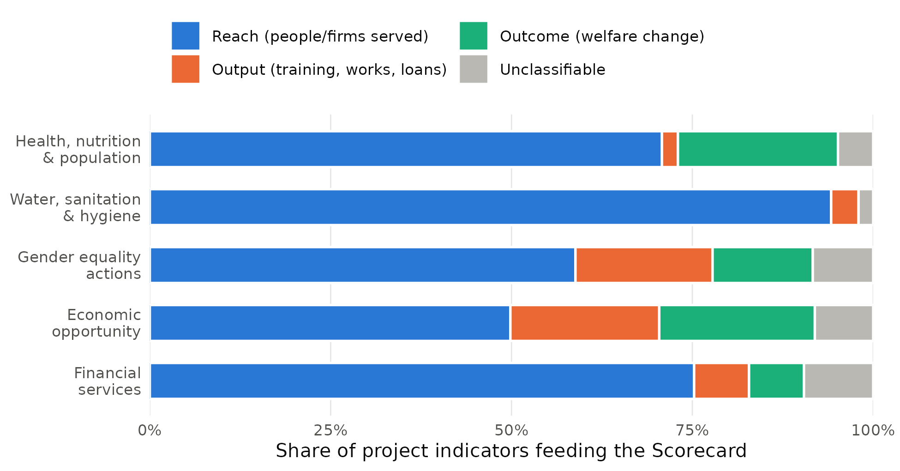
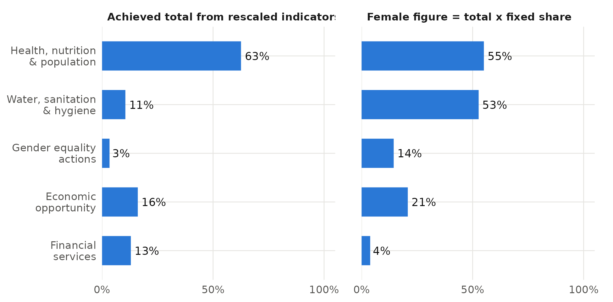
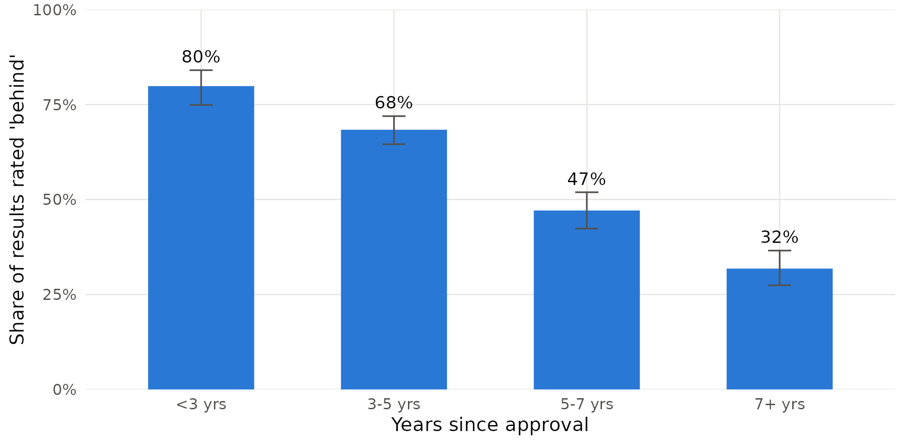
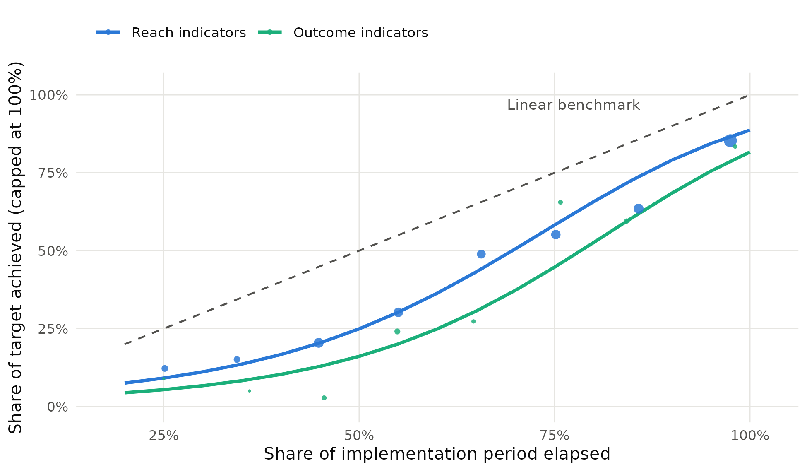

Abstract. The World Bank Group’s FY24–FY30 Scorecard was presented as a shift from counting inputs to measuring outcomes. This paper tests that claim against a welfare anchor, extending the welfare-economics criterion that González (2026) proposes for private sector development to the Scorecard’s people-level results. Using the public project-level records behind the FY25 Scorecard (3,617 results from 1,129 projects in 124 countries), I apply three tests. Welfare relevance: 62% of contributing project indicators count people or firms reached and only 14% measure a change in welfare (14% in a hand-coded sample); 80% of projects report no outcome indicator at all, and projects approved after the new Scorecard are not significantly more outcome-oriented. Measurement integrity: 91% of results start from a zero baseline, 29% of the reported achieved total (63% in health) comes from figures rescaled by conversion factors, and only 14% of female figures can show whether women were reached as planned. Progress judgement: under a linear on-track rule, 57% of results look “behind”, falling from 80% in projects under three years old to 32% after seven; and outcome indicators are 13 percentage points more likely to be rated behind than reach indicators with the same age, sector and country characteristics. A results system built this way rewards counting reach and penalises measuring welfare. I propose five changes that would anchor the Scorecard in welfare without adding reporting burden.
Keywords: results measurement; World Bank; corporate scorecard; performance indicators; gender data; development effectiveness. JEL: F35, O19, H43, C25.
In April 2024 the World Bank Group (WBG) replaced its corporate scorecard of roughly 150 indicators with a new Scorecard of 22 results indicators for FY24–FY30. Management described the change as a milestone in the Group’s efforts “to focus on outcomes, rather than inputs” (World Bank 2024b), and the Scorecard now serves as both a communication device and a management tool that cascades into unit-level targets (World Bank 2024a). Its headline numbers—hundreds of millions of people receiving health services, water, financial services or gender-equality actions—have become the Group’s main public account of what its lending achieves.
Whether those numbers measure welfare is a question with a long history inside the institution. The Independent Evaluation Group (IEG) has repeatedly found the Bank Group’s self-evaluation systems geared to results reporting and upward accountability rather than learning (IEG 2016), and in November 2025 it launched a formative evaluation of the Scorecard itself, whose approach paper draws on the literature on gaming in centralised performance systems (IEG 2025; see also Hood 2006). From outside, González (2026) argues that the Bank’s private sector work has been reorganised repeatedly because it lacks a fixed objective, and proposes a welfare-economics “anchor”: an operation qualifies only if it addresses a binding market failure, acts on that failure, and changes outcomes that would not otherwise occur.
This paper applies the same discipline to the measurement side. If the Scorecard is anchored in welfare, three things should be true of the results it aggregates. First, they should measure changes in people’s welfare, not only how many people a project touched (welfare relevance). Second, the reported figures should be measured rather than constructed from conversion factors, assumed shares and zero baselines (measurement integrity). Third, the way progress is judged should reflect performance rather than the passage of time, and should not penalise teams that choose to measure welfare (progress judgement).
I test each condition with the public project-level records that underlie the FY25 Scorecard: 3,617 project indicators (“results”) from 1,129 IDA- and IBRD-financed projects in 124 countries, feeding five people-level results areas (health, nutrition and population; water, sanitation and hygiene; gender-equality actions; economic opportunity; and financial services). Each indicator is classified by its position in the results chain—reach, output or outcome—using transparent rules validated against a held-out hand-coded sample (κ = 0.66). The econometrics is deliberately simple: linear probability models, a fractional logit, and logit checks, all with standard errors clustered by project.
The results are consistent across the three tests. Most of what the Scorecard counts is reach: 62% of contributing indicators count people or firms served, and 80% of projects feed it no outcome indicator at all. A large share of the reported totals is constructed: 29% of the achieved total comes from rescaled figures, and more than half of female figures in health and WASH are the total multiplied by an assumed share. And a linear on-track rule mostly measures project age, while rating outcome indicators as behind 13 percentage points more often than comparable reach indicators—a direct, if unintended, penalty on measuring welfare.
The paper contributes in three ways. It provides a systematic, reproducible audit of the Scorecard’s project-level evidence, complementing IEG’s ongoing formative evaluation. It extends the welfare-anchor argument from what the Bank finances to how it counts. And it converts the familiar warning that “what gets measured gets done” (Narayanaswamy 2021) into specific, testable quantities that management could track. Data and code in R and Stata are released with the paper.
The WBG adopted a corporate scorecard in 2011, extended it to IFC and MIGA in 2014 and revised it in 2017 and 2020 (IEG 2025). The FY24–FY30 Scorecard reduced the indicator set to a short list of WBG results indicators alongside vision and client-context indicators (World Bank 2024a). Each people-level results indicator is an aggregate of project indicators: every active or recently closed project that contributes reports a baseline, a target and a latest progress value, and these are converted into the Scorecard’s unit (usually “people”) and summed. The public data release reports, for each contributing project indicator, the original wording, the baseline, progress and target values, the conversion and disaggregation factors applied, and a flag for results masked to avoid double counting. These records are what make the tests in this paper possible.
A large literature warns that quantitative targets change behaviour in ways that can undermine their purpose. Campbell (1979) observed that the more a quantitative indicator is used for decisions, the more it is subject to corruption pressures. Hood (2006) and Bevan and Hood (2006) document ratchet, threshold and output-distortion effects in the British “targets regime”. In principal–agent terms, Holmström and Milgrom (1991) show that when some dimensions of a task are easier to measure than others, strong incentives on the measurable dimension pull effort away from the rest. In aid, Natsios (2010) describes how compliance-driven measurement crowds out the most transformational work, and Honig (2018) shows that tight top-down measurement performs worst precisely where outcomes are hardest to verify. Andrews, Pritchett and Woolcock (2013) and Pritchett, Samji and Hammer (2013) argue for monitoring that supports learning about what works rather than reporting compliance.
Studies of the Bank’s own project ratings find that project-level factors explain much more of the variation in outcomes than country characteristics (Denizer, Kaufmann and Kraay 2013; Bulman, Kolkma and Kraay 2017), that preparation matters (Kilby 2015), and that projects with better monitoring and evaluation are rated more highly (Raimondo 2016). IEG’s annual Results and Performance of the World Bank Group reports identify improving results monitoring as one of the main levers for better outcomes (IEG 2024). This literature uses ex-post ratings of closed projects; the present paper looks instead at the indicators that the Scorecard aggregates while projects are under way.
González (2026) shows that each wave of private sector development doctrine redefined success—privatisation transactions, reforms achieved, capital mobilised, accounts opened—and that “a structural remedy cannot resolve an analytical problem”. His remedy is a test any operation must pass before public money is committed. The analogue for results is a test that any reported result should pass before it is counted as evidence of development impact. Appendix B maps his three hurdles onto the three tests used here.
Source. The data are the FY25 Scorecard exports published at scorecard.worldbank.org, with results as of 30 June 2025. I use the project-level sheet of the four files that cover the people-level results areas: health, nutrition and population services; water, sanitation and hygiene; gender-equality and economic-opportunity actions; and financial services. Each record is a project indicator mapped to a Scorecard sub-indicator, with project characteristics (region, country, lead department, lending instrument, financing source, commitment, approval and closing dates, FCV and LDC flags, income group).
Unit of analysis. A result is one non-disaggregated project indicator contributing to one Scorecard sub-indicator. Female and youth rows are disaggregations of these results and are used only in the gender test, where the unit is a project × sub-indicator pair. Table 1 shows how the samples are built; Table 2 describes the projects.
| Step | Records | Projects |
|---|---|---|
| Project-indicator records in the FY25 Scorecard exports (four results files) | 10,893 | 1,131 |
| of which disaggregation rows (female, youth) | 7,276 | |
| Results: total (non-disaggregated) project indicators — Tests 1–2 | 3,617 | 1,129 |
| not masked for double counting | 3,132 | 999 |
| with positive target, dates, and ≥20% of implementation period elapsed | 1,809 | 762 |
| excluding unclassifiable indicators — Test 3 | 1,709 | 730 |
| Project × Scorecard sub-indicator pairs with a female figure — Test 2 (gender) | 1,734 | 990 |
Source: World Bank Group Scorecard, FY25 cycle (results as of 30 June 2025), sheet “WB Project Information” of the health, WASH, gender and financial-services results files. Rows that appear in two files are counted once.
| Variable (project level, N = 1,129) | Mean | SD | Min | Max |
|---|---|---|---|---|
| Fragile and conflict-affected (FCV) country | 0.29 | 0.45 | 0.00 | 1.00 |
| Least developed country | 0.46 | 0.50 | 0.00 | 1.00 |
| IDA-financed | 0.67 | 0.47 | 0.00 | 1.00 |
| Active (not closed) at cutoff | 0.78 | 0.42 | 0.00 | 1.00 |
| Net commitment (US$ million) | 190.26 | 208.01 | 0.00 | 1862.00 |
| Years since approval | 4.15 | 2.91 | 0.00 | 16.06 |
| Planned duration (years) | 6.09 | 2.00 | 0.86 | 16.81 |
| Approved FY25 (after new Scorecard) | 0.15 | 0.36 | 0.00 | 1.00 |
Commitment is the net commitment recorded in the Scorecard export. Regional distribution of projects: AFE 267, AFW 248, EAP 108, ECA 141, LCR 133, MENAAP 131, SAR 101.
Key variables. Indicator type is the results-chain classification described in Section 4.1. Rescaled equals one when the progress conversion factor is positive and different from one, i.e. the project’s own figure is multiplied to express it in the Scorecard unit (for example, sewer connections multiplied by household size, or a vaccination percentage multiplied by a population). Zero baseline equals one when the calculated baseline value is zero. Fixed-share female figure follows the export’s disaggregation factor: when the factor lies strictly between zero and one, the female figure is the total multiplied by an assumed share rather than a separate count. Behind applies a linear on-track rule: a result is behind if the share of its target achieved is more than 10 percentage points below the share of the implementation period elapsed (approval to closing). The rule is not an official WBG rating; it formalises the benchmark implicit whenever cumulative progress is compared with elapsed time, and alternative thresholds are reported.
Dataset release. The clean files results_clean, gender_pairs and projects_clean are released in CSV and Stata (.dta) formats with variable labels, together with the Python build script that produces them from the raw exports, an R script and a Stata do-file that reproduce every table and figure.
Each indicator’s wording is classified into one of four types using ordered, transparent rules (Appendix A): outcome—a change in a condition or behaviour of people or firms (income, employment, sales, health status, adoption of a practice, service-use rates); output—something the project produces or does (people trained or certified, works built, loans issued, plans adopted); reach—a count of people, households or firms who receive, access or benefit from project goods or services; and unclassifiable—breakdown labels such as “of which women” or a country name. To guard against tuning the rules to the data used to evaluate them, I drew two independent random samples of 200 results. The first (development set) was used to refine the rules; the second (test set) was coded by hand without sight of the rule labels and is used only for evaluation. On the test set the rules agree with the hand coding in 83.5% of cases (κ = 0.66, “substantial” agreement; Cohen 1960). Reach is identified with high precision and recall; outcome labels are rarely wrong (precision 0.89) but some outcomes are missed (recall 0.57). The rule-based share of outcome indicators should therefore be read as a lower bound, and I report the hand-coded share alongside it (Table 4).
I estimate linear probability models (LPM) of the form
Outcomeip = α + Σs βs Areas,ip + Σc δc Cohortc,p + X′pγ + μd(p) + εip
where i indexes results and p projects, Area are Scorecard results areas, Cohort are approval-year groups (the FY25 cohort, approved after the new Scorecard was adopted, is of particular interest), X contains region, FCV status, income group, IDA financing, lending instrument and log commitment, and μ are lead-department fixed effects. The LPM coefficients are directly interpretable as percentage-point differences; logit average marginal effects are reported as a check.
I first document the prevalence of zero baselines, rescaled figures and fixed-share female figures, and the share of the reported achieved total that comes from rescaled figures. I then estimate the same LPM with Rescaledip and, at the pair level, FixedSharejp as dependent variables, adding indicator type and a percentage-unit dummy in the rescaling model.
Two questions matter: how does progress accumulate over a project’s life, and what does the linear on-track rule actually pick up? For the first, I estimate a fractional logit (Papke and Wooldridge 1996) for the share of target achieved, yip ∈ [0, 1]:
E[yip | ·] = Λ( θ1Eip + θ2E2ip + λ1Outputip + λ2Outcomeip + κRescaledip + Area′β + X′pγ )
where E is the share of the implementation period elapsed and Λ is the logistic function. If progress were linear, the predicted curve would track the 45-degree line. For the second, I estimate LPMs of Behindip on project-age bins alone and then add indicator type, rescaling, results area, project characteristics and department fixed effects. Comparing the R² of the timing-only model with the full model shows how much of the explainable variation in “behind” is about time; the coefficient on Outcome shows whether the rule penalises welfare measurement holding age constant.
Inference. Results within a project share design, team and context, so all standard errors are clustered by project (Cameron and Miller 2015); clustering by country is reported as a robustness check. The analysis is descriptive and associational: the tests ask whether the Scorecard’s evidence has the properties a welfare-anchored system would need, not what causes project success.
Figure 1 and Table 3 show the composition of the evidence. Across all five results areas, 62% of contributing indicators count people or firms reached, 16% are outputs, and 14% measure a welfare outcome. The hand-coded samples give a very similar picture: 69% reach and 14% outcome (95% CI 11%–17%). Water, sanitation and hygiene results contain essentially no outcome indicators—every result counts people provided with a service—while economic opportunity and health have the highest outcome shares, reflecting indicators such as jobs created, sales or income gains, and vaccination or service-coverage rates.

Share of the 3,617 project indicators feeding each Scorecard results area, by results-chain type. Source: author’s classification of FY25 Scorecard project records.
| Scorecard results area | Results | Reach | Output | Outcome | Unclassifiable |
|---|---|---|---|---|---|
| Health, nutrition & population | 226 | 71% | 2% | 22% | 5% |
| Water, sanitation & hygiene | 396 | 94% | 4% | 0% | 2% |
| Gender equality actions | 1,725 | 59% | 19% | 14% | 8% |
| Economic opportunity | 967 | 50% | 21% | 22% | 8% |
| Financial services | 303 | 75% | 8% | 8% | 10% |
| All results areas | 3,617 | 62% | 16% | 14% | 7% |
Rule-based classification of the indicator wording (Appendix A). Shares are row percentages.
| Type | Precision (test set) | Recall (test set) | Rule-based share, all results | Hand-coded share (n = 400) |
|---|---|---|---|---|
| Reach | 0.92 [0.86, 0.95] | 0.90 [0.84, 0.94] | 62.4% | 68.8% [64.0%, 73.1%] |
| Output | 0.69 [0.52, 0.81] | 0.80 [0.63, 0.90] | 15.7% | 16.5% [13.2%, 20.5%] |
| Outcome | 0.89 [0.69, 0.97] | 0.57 [0.39, 0.73] | 14.4% | 13.8% [10.7%, 17.5%] |
Held-out test set of 200 randomly drawn results coded by hand without sight of the rule labels; overall agreement 83.5%, Cohen’s κ = 0.66. A separate development set of 200 results was used to refine the rules and is not used for these statistics. The last column pools both hand-coded sets. 95% Wilson intervals in brackets.
At the project level, 80% of the 1,129 projects contribute no outcome indicator to the Scorecard, and 54% contribute only reach indicators. For most projects, then, the Scorecard can say how many people were touched but not whether anything changed for them.
Table 5 shows that these differences are systematic. Relative to health, WASH results are 23.7 percentage points less likely to be outcome indicators, financial-services results 16.0 points less likely, and gender-equality actions 8.6 points less likely, holding region, fragility, income group, financing, instrument and size constant. Project characteristics other than the results area explain little. Logit average marginal effects are almost identical (for example -16.1 points for financial services). Importantly, there is no sign that the new Scorecard shifted design toward welfare measurement: projects approved in FY25, after its adoption, are 5.7 points more likely to use outcome indicators than pre-FY20 projects (p = 0.07), and the difference falls to 3.0 points (p = 0.33) with department fixed effects. The hand-coded subsample tells the same story (Appendix Table A1).
| (1) | (2) | (3) | |
|---|---|---|---|
| Results area (base: health, nutrition & population) | |||
| WASH | -0.217*** | -0.237*** | -0.296*** |
| (0.038) | (0.037) | (0.041) | |
| Gender equality actions | -0.084** | -0.086** | -0.143*** |
| (0.038) | (0.036) | (0.034) | |
| Economic opportunity | -0.008 | -0.016 | -0.099*** |
| (0.042) | (0.039) | (0.035) | |
| Financial services | -0.146*** | -0.160*** | -0.238*** |
| (0.042) | (0.040) | (0.041) | |
| Approval cohort (base: FY19 or earlier) | |||
| Approved FY20-21 | 0.068** | 0.075** | 0.068** |
| (0.035) | (0.030) | (0.026) | |
| Approved FY22-23 | 0.037 | 0.035 | 0.014 |
| (0.024) | (0.024) | (0.023) | |
| Approved FY24 | 0.025 | 0.024 | -0.002 |
| (0.036) | (0.033) | (0.031) | |
| Approved FY25 (new Scorecard) | 0.061* | 0.057* | 0.030 |
| (0.032) | (0.031) | (0.031) | |
| Project characteristics | |||
| FCV country | -0.035 | -0.031 | |
| (0.022) | (0.021) | ||
| IDA-financed | -0.015 | -0.023 | |
| (0.039) | (0.035) | ||
| Log commitment | -0.002 | -0.001 | |
| (0.008) | (0.008) | ||
| Region, income group, instrument | Yes | Yes | |
| Lead department fixed effects | Yes | ||
| Observations (results) | 3,617 | 3,617 | 3,617 |
| Clusters (projects) | 1,129 | 1,129 | 1,129 |
| R² | 0.041 | 0.065 | 0.095 |
Dependent variable = 1 if the project indicator measures a welfare outcome. Standard errors clustered by project in parentheses. *** p<0.01, ** p<0.05, * p<0.10. A logit version gives the same pattern (average marginal effects in the text); no WASH result is an outcome indicator, so WASH is perfectly predicted in the logit.
Three features of the data show how far the Scorecard’s numbers are built rather than measured (Table 6, Figure 2). First, 91% of results start from a zero baseline, so they record cumulative contact with the project rather than change against a counterfactual or starting level. Second, 10% of results are rescaled by a conversion factor, but these account for 29% of the 803 million achieved “units” reported across the five areas. In health the figure is 63%: most of the reported number of people receiving health services is derived by multiplying project indicators—often coverage percentages—by population or household factors. Among indicators measured in percentages, 49% are converted into counts of people in this way. Third, 13% of results are masked to avoid double counting, a sensible correction that also signals how much overlap the aggregation must manage.

Left: share of the reported achieved total that comes from project figures multiplied by a conversion factor. Right: share of project × sub-indicator pairs whose female figure is the total multiplied by a fixed share.
| Scorecard results area | Results | Zero baseline | Rescaled | Share of reported total from rescaled results | Female figure = fixed share of total |
|---|---|---|---|---|---|
| Health, nutrition & population | 103 | 65% | 52% | 63% | 55% |
| Water, sanitation & hygiene | 374 | 97% | 14% | 11% | 53% |
| Gender equality actions | 1,552 | 90% | 7% | 3% | 14% |
| Economic opportunity | 882 | 94% | 9% | 16% | 21% |
| Financial services | 221 | 88% | 13% | 13% | 4% |
| All results areas | 3,132 | 91% | 10% | 29% | 22% |
Results not masked for double counting (N = 3,132). “Rescaled”: the project figure is multiplied by a conversion factor (positive and different from 1) to express it in the Scorecard unit. Last column: project × sub-indicator pairs with a female figure (N = 1,734).
Gender disaggregation shows the same pattern more sharply. Of 1,734 project × sub-indicator pairs with a female figure, 387 (22%) are fixed-share constructions, 665 report no progress yet, 349 concern women-only interventions and 91 report an identical planned and achieved share. Only 235 (14%) can show whether women were reached in the proportion planned. Fixed-share figures dominate in health (55%) and WASH (53%), the two areas where the Scorecard reports the largest numbers of women reached.
Table 7 shows that the construction of figures is mainly a property of the results area rather than of the country or project. There is one encouraging trend: projects approved in FY24 and FY25 are 9.9 and 7.9 percentage points less likely than pre-FY20 projects to report fixed-share female figures, and FY25 projects are 9.8 points less likely to be rescaled. Percentage-unit indicators are 31.0 points more likely to be rescaled, as expected.
| (1) Female figure is a fixed share | (2) Result is rescaled | |
|---|---|---|
| Results area (base: health, nutrition & population) | ||
| WASH | -0.033 | -0.295*** |
| (0.068) | (0.059) | |
| Gender equality actions | -0.398*** | -0.404*** |
| (0.062) | (0.051) | |
| Economic opportunity | -0.337*** | -0.370*** |
| (0.062) | (0.054) | |
| Financial services | -0.504*** | -0.341*** |
| (0.062) | (0.058) | |
| Indicator | ||
| Unit is a percentage | 0.310*** | |
| (0.056) | ||
| Output indicator | 0.073** | |
| (0.030) | ||
| Outcome indicator | 0.039* | |
| (0.024) | ||
| Approval cohort (base: FY19 or earlier) | ||
| Approved FY20-21 | -0.043 | -0.039 |
| (0.029) | (0.045) | |
| Approved FY22-23 | -0.062** | -0.054 |
| (0.027) | (0.038) | |
| Approved FY24 | -0.099*** | -0.014 |
| (0.038) | (0.057) | |
| Approved FY25 (new Scorecard) | -0.079** | -0.098*** |
| (0.031) | (0.034) | |
| Project characteristics | ||
| FCV country | 0.003 | 0.027 |
| (0.025) | (0.027) | |
| IDA-financed | 0.001 | 0.050* |
| (0.029) | (0.027) | |
| Log commitment | 0.011 | 0.040*** |
| (0.010) | (0.013) | |
| Region, income group, instrument | Yes | Yes |
| Observations | 1,734 | 3,132 |
| R² | 0.145 | 0.195 |
Column (1): project × Scorecard sub-indicator pairs with a female figure. Column (2): results not masked for double counting. Standard errors clustered by project. *** p<0.01, ** p<0.05, * p<0.10.
Under the linear rule, 57% of the 1,709 judgeable results are behind schedule. Figure 4 shows that this share falls from 80% for projects less than three years old to 68%, 47% and 32% in successive age groups. Age bins alone explain an R² of 0.125, 48% of the 0.260 explained by the full model with design, project characteristics and department fixed effects (Table 8).

N = 1,709 results in 730 projects. Error bars: 95% Wilson intervals.
The reason is visible in Figure 3. Progress does not accumulate in a straight line: the fractional logit implies that a typical reach result has achieved about 25% of its target at the midpoint of implementation, not 50%, and an outcome result about 16%. Results follow an S-shaped path in which early years are spent on procurement, works and institutional set-up. A benchmark that expects proportional progress will therefore flag most young projects as failing, whatever their eventual performance.

Lines: average predicted share of target achieved from the fractional logit in Table 8, column (1), evaluated over the estimation sample. Dots: binned means (size proportional to the number of results). Dashed line: the linear benchmark implied by comparing cumulative progress with elapsed time.
The most consequential finding is the coefficient on outcome indicators. Holding project age, rescaling, results area, region, fragility, income group, instrument, size and lead department constant, outcome indicators are 13.3 percentage points more likely to be rated behind than reach indicators (Table 8, column 5; 16.5 points without department fixed effects). In the fractional logit their progress is significantly lower (-0.59 log-odds). Outcomes come later in the results chain, so a time-proportional rule systematically makes them look worse. Rescaled figures move the other way: they are 11.5 points less likely to be behind, and their progress is higher (0.65 log-odds), consistent with constructed numbers flattering performance. Combined with the Scorecard’s role in cascading targets, this creates exactly the multitask incentive that Holmström and Milgrom (1991) describe: teams that choose to measure welfare are penalised on the dimension that is monitored.
| (1) Progress frac. logit | (2) Behind | (3) Behind | (4) Behind | (5) Behind | |
|---|---|---|---|---|---|
| Timing | |||||
| Share of period elapsed | 3.475* | ||||
| (1.940) | |||||
| Share elapsed, squared | 2.236 | ||||
| (1.471) | |||||
| 3–5 years since approval | -0.115*** | -0.106** | -0.139*** | -0.139*** | |
| (0.043) | (0.042) | (0.041) | (0.039) | ||
| 5–7 years | -0.327*** | -0.325*** | -0.358*** | -0.344*** | |
| (0.053) | (0.050) | (0.047) | (0.047) | ||
| 7+ years | -0.480*** | -0.487*** | -0.511*** | -0.496*** | |
| (0.048) | (0.053) | (0.052) | (0.049) | ||
| What is measured (base: reach indicator) | |||||
| Output indicator | -0.191 | 0.102 | 0.099 | 0.087 | |
| (0.180) | (0.065) | (0.061) | (0.064) | ||
| Outcome indicator | -0.595*** | 0.175*** | 0.165*** | 0.133*** | |
| (0.197) | (0.051) | (0.045) | (0.043) | ||
| Rescaled figure | 0.648*** | -0.085* | -0.129*** | -0.115*** | |
| (0.191) | (0.050) | (0.042) | (0.039) | ||
| Results area (base: health, nutrition & population) | |||||
| WASH | -2.168*** | 0.483*** | 0.462*** | 0.339*** | |
| (0.304) | (0.068) | (0.070) | (0.103) | ||
| Gender equality actions | -1.044*** | 0.248*** | 0.233*** | 0.162** | |
| (0.278) | (0.061) | (0.061) | (0.076) | ||
| Economic opportunity | -1.325*** | 0.313*** | 0.299*** | 0.206** | |
| (0.280) | (0.063) | (0.063) | (0.085) | ||
| Financial services | -0.838** | 0.239*** | 0.228*** | 0.178* | |
| (0.350) | (0.076) | (0.076) | (0.098) | ||
| Project characteristics | |||||
| FCV country | -0.212 | 0.061 | 0.075* | ||
| (0.177) | (0.042) | (0.041) | |||
| Log commitment | 0.136* | 0.001 | 0.016 | ||
| (0.074) | (0.016) | (0.017) | |||
| Region, income group, instrument | Yes | Yes | Yes | ||
| Lead department fixed effects | Yes | ||||
| Observations (results) | 1,709 | 1,709 | 1,709 | 1,709 | 1,709 |
| Clusters (projects) | 730 | 730 | 730 | 730 | 730 |
| R² | – | 0.125 | 0.184 | 0.226 | 0.260 |
Column (1): fractional logit (Papke and Wooldridge 1996) of the share of target achieved (capped at 1), coefficients in log-odds. Columns (2)–(5): linear probability models; “behind” = share of target achieved below share of implementation period elapsed minus 10 percentage points. Base age category: under 3 years. Standard errors clustered by project. *** p<0.01, ** p<0.05, * p<0.10.
Table 9 shows that the two central Test 3 results hold across alternative definitions and samples. The outcome-indicator penalty ranges from 10.1 to 13.6 percentage points across thresholds of 0 and 20 points, active projects only, excluding rescaled results, and clustering by country, and is significant in every specification; the logit gives the same sign and significance. The age gradient is large and precise in all specifications. For Test 1, re-estimating on the 400 hand-coded results (Appendix Table A1) reproduces the WASH gap and the absence of a post-Scorecard shift. Misclassification of a binary dependent variable biases LPM coefficients toward zero when it is unrelated to the regressors (Hausman, Abrevaya and Scott-Morton 1998), so the Test 1 differences are, if anything, understated.
| Specification | Outcome indicator | 7+ years since approval | N |
|---|---|---|---|
| Baseline (Table 8, column 5) | 0.133*** (0.043) | -0.496*** (0.049) | 1,709 |
| Threshold 0 pp | 0.101** (0.042) | -0.463*** (0.050) | 1,709 |
| Threshold 20 pp | 0.102** (0.044) | -0.559*** (0.047) | 1,709 |
| Active projects only | 0.119** (0.046) | -0.440*** (0.063) | 1,262 |
| Excluding rescaled results | 0.136*** (0.048) | -0.518*** (0.052) | 1,468 |
| Clustered by country | 0.133*** (0.044) | -0.496*** (0.059) | 1,709 |
| Logit (log-odds) | 0.850*** (0.240) | -2.640*** (0.318) | 1,709 |
Each row re-estimates column (5) of Table 8 with one change. Thresholds redefine “behind” as progress below elapsed share (0 pp) or elapsed share minus 20 pp. The logit omits department fixed effects. Clustered standard errors in parentheses. *** p<0.01, ** p<0.05, * p<0.10.
Taken together, the three tests suggest that the Scorecard is anchored in reach rather than welfare. That is partly by design: aggregating outcomes across heterogeneous projects is hard, and counts of people served are additive in a way that income gains or mortality reductions are not. The 2024 reform recognised this tension and moved some indicators from access toward use (World Bank 2024b). But the project-level evidence shows how far there is still to go. The numbers that headline the Group’s annual reporting are dominated by cumulative counts from zero baselines; a substantial part of them is produced by conversion factors and assumed shares; and the implicit standard for judging progress rewards counting reach early and penalises measuring welfare.
Three caveats shape the interpretation. First, reach is not worthless: in WASH, for instance, connecting people to safely managed water is itself close to a welfare outcome, and the Scorecard’s vision indicators track country-level welfare separately. The point is that the results layer, the part attributable to WBG operations, rarely measures change. Second, conversion factors are often reasonable (household size is a sensible way to turn connections into people), but they are undocumented in the public release, so readers cannot tell which totals are counted and which are modelled. Third, the “behind” finding concerns a linear rule that any reader of cumulative progress data implicitly applies; it is not a claim about how WBG managers formally rate projects. The concern is that the same benchmark shapes how teams, managers and the Board read the Scorecard.
The findings complement those of the project-performance literature. That literature shows that good monitoring and evaluation is associated with better project outcomes (Raimondo 2016) and that most variation in performance is within countries (Bulman, Kolkma and Kraay 2017). Here too, the results area and indicator choice—design decisions made by teams—explain far more than country characteristics. This means the problem is fixable through the rules that govern what projects report.
Five changes would anchor the Scorecard in welfare without adding new reporting burdens.
For researchers and evaluators, the most valuable single step would be for the WBG to publish earlier Scorecard cycles in the same format. That would allow trajectories, rather than snapshots, to be analysed, and would make it possible to test whether the 2024 reform changed reporting behaviour.
The analysis uses one Scorecard cycle and is therefore cross-sectional; it cannot follow individual results over time or link them to ex-post ratings. The indicator classification is rule-based and imperfect, although validated on a held-out sample and conservative for outcomes. Some fields—notably conversion factors of zero or missing—are not documented in the public release, and I treat only explicit factors different from one as rescaling. Results masked for double counting are excluded from Tests 2 and 3. The “behind” rule is an analytical construct. Finally, the associations reported here are not causal estimates of the effect of indicator choice on project success; they describe the properties of the evidence that the Scorecard aggregates.
The FY24–FY30 Scorecard set out to measure outcomes rather than inputs. Its own project-level evidence shows that it mostly measures reach: most contributing indicators count people served, a large share of reported totals is constructed from conversion factors and assumed shares, and the implicit standard for judging progress mostly reflects time while penalising the indicators that measure welfare. None of this requires a new Scorecard. It requires the existing one to be anchored: to report how much of each number is measured, to show whether anything changed for the people counted, and to judge progress against realistic trajectories. Those changes would let the Scorecard do what its designers intended—tell the Group’s shareholders and the public whether lives are improving, not just how many were reached.
Andrews, M., Pritchett, L., and Woolcock, M. (2013). Escaping capability traps through problem driven iterative adaptation (PDIA). World Development, 51, 234–244.
Bevan, G., and Hood, C. (2006). What’s measured is what matters: Targets and gaming in the English public health care system. Public Administration, 84(3), 517–538.
Bulman, D., Kolkma, W., and Kraay, A. (2017). Good countries or good projects? Comparing macro and micro correlates of World Bank and Asian Development Bank project performance. Review of International Organizations, 12(3), 335–363.
Cameron, A. C., and Miller, D. L. (2015). A practitioner’s guide to cluster-robust inference. Journal of Human Resources, 50(2), 317–372.
Campbell, D. T. (1979). Assessing the impact of planned social change. Evaluation and Program Planning, 2(1), 67–90.
Cohen, J. (1960). A coefficient of agreement for nominal scales. Educational and Psychological Measurement, 20(1), 37–46.
Denizer, C., Kaufmann, D., and Kraay, A. (2013). Good countries or good projects? Macro and micro correlates of World Bank project performance. Journal of Development Economics, 105, 288–302.
González, Á. S. (2026). The World Bank Cannot Stop Reorganizing Its Private Sector Work: The Missing Welfare Anchor. CGD Policy Paper 402. Washington, DC: Center for Global Development.
Hausman, J. A., Abrevaya, J., and Scott-Morton, F. M. (1998). Misclassification of the dependent variable in a discrete-response setting. Journal of Econometrics, 87(2), 239–269.
Holmström, B., and Milgrom, P. (1991). Multitask principal–agent analyses: Incentive contracts, asset ownership, and job design. Journal of Law, Economics, and Organization, 7, 24–52.
Honig, D. (2018). Navigation by Judgment: Why and When Top-Down Management of Foreign Aid Doesn’t Work. New York: Oxford University Press.
Hood, C. (2006). Gaming in Targetworld: The targets approach to managing British public services. Public Administration Review, 66(4), 515–521.
IEG (Independent Evaluation Group) (2016). Behind the Mirror: A Report on the Self-Evaluation Systems of the World Bank Group. Washington, DC: World Bank.
IEG (2024). Results and Performance of the World Bank Group 2024. Washington, DC: World Bank.
IEG (2025). World Bank Group Scorecard Formative Evaluation: Approach Paper. Washington, DC: World Bank, November.
Kilby, C. (2015). Assessing the impact of World Bank preparation on project outcomes. Journal of Development Economics, 115, 111–123.
Narayanaswamy, M. (2021). What Gets Measured Gets Done: Using a Corporate Scorecard to Drive Greater Investment Impact. EM Compass Note 108. Washington, DC: International Finance Corporation.
Natsios, A. (2010). The Clash of the Counter-bureaucracy and Development. CGD Essay. Washington, DC: Center for Global Development.
Papke, L. E., and Wooldridge, J. M. (1996). Econometric methods for fractional response variables with an application to 401(k) plan participation rates. Journal of Applied Econometrics, 11(6), 619–632.
Pritchett, L., Samji, S., and Hammer, J. (2013). It’s All About MeE: Using Structured Experiential Learning (“e”) to Crawl the Design Space. CGD Working Paper 322. Washington, DC: Center for Global Development.
Raimondo, E. (2016). What Difference Does Good Monitoring and Evaluation Make to World Bank Project Performance? Policy Research Working Paper 7726. Washington, DC: World Bank.
Wilson, E. B. (1927). Probable inference, the law of succession, and statistical inference. Journal of the American Statistical Association, 22(158), 209–212.
World Bank (2024a). New World Bank Group Scorecard FY24–FY30: Driving Action, Measuring Results. Washington, DC: World Bank Group.
World Bank (2024b). “World Bank Group Announces New Approach to Measuring Impact.” Press release, April 9, 2024.
World Bank Group (2025). World Bank Group Scorecard, FY25 data release (results as of June 30, 2025). scorecard.worldbank.org.
Indicator wording is lower-cased and stripped of ID prefixes and numbering. Rules are applied in order; the first match determines the type.
| Order | Type | Rule (abbreviated; full regular expressions in code/01_build_dataset.py) |
|---|---|---|
| 1 | Unclassifiable | Breakdown labels (“of which…”, “female”, “regional”) or fewer than four characters |
| 2 | Reach | Scorecard template wording “benefiting from actions to…” |
| 3 | Outcome | Income, earnings, sales, profits; mortality, stunting, prevalence; learning; employment status; new firms; people or firms adopting a practice; vaccinated; rates, proportions and shares; “increase/reduction in” (not “in the number of”) |
| 4 | Output | Trained, training, certified, apprenticeship, courses |
| 5 | Outcome | Jobs, employment (after training rules) |
| 6 | Reach | A person/household/firm noun followed by receiving, provided with, access, benefiting, using, enrolled, reached, supported, covered, served, participating |
| 7 | Output | Issued, disbursed, loans; constructed, rehabilitated, installed; prepared, approved, established; systems, plans, policies, registries |
| 8 | Reach | Any remaining person/household/firm noun |
| González (2026) hurdle for operations | Test for reported results (this paper) | Evidence used |
|---|---|---|
| Justification: a binding market failure is diagnosed | Welfare relevance: the result measures a change in welfare | Indicator wording; results-chain type |
| Effectiveness: the instrument acts on the distortion | Measurement integrity: the figure is measured, not constructed | Baselines, conversion and disaggregation factors |
| Additionality: outcomes would not occur otherwise | Progress judgement: ratings reflect performance, not time | Progress, targets, dates |
| Outcome (hand-coded) | |
|---|---|
| WASH | -0.160** |
| (0.073) | |
| Gender equality actions | -0.012 |
| (0.077) | |
| Economic opportunity | 0.023 |
| (0.084) | |
| Financial services | -0.124 |
| (0.077) | |
| Approved FY20-21 | 0.039 |
| (0.057) | |
| Approved FY22-23 | 0.078 |
| (0.052) | |
| Approved FY24 | -0.104*** |
| (0.035) | |
| Approved FY25 (new Scorecard) | 0.052 |
| (0.061) | |
| Observations | 400 |
Dependent variable = 1 if the hand coder classified the indicator as an outcome. Standard errors clustered by project.
All data are public WBG Scorecard exports. The replication package contains the clean datasets (CSV and .dta), the Python build script, the R script and the Stata do-file, the hand-coded validation samples, and this paper’s build script: [repository link].